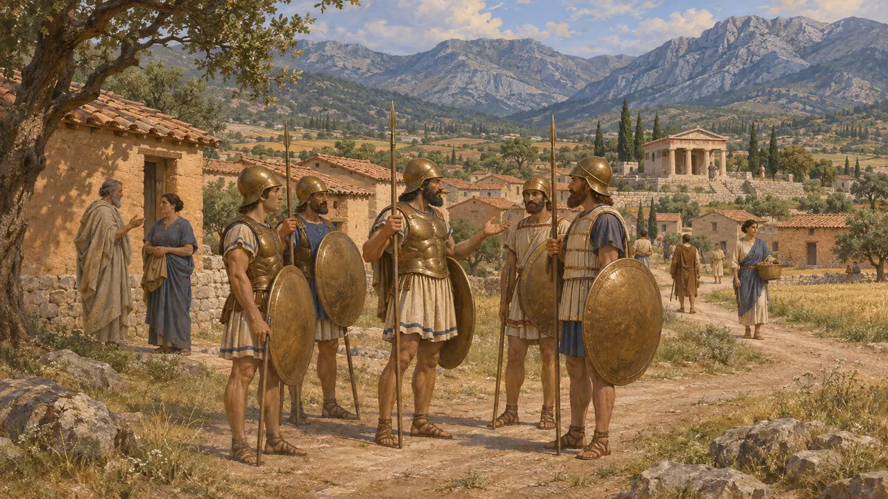
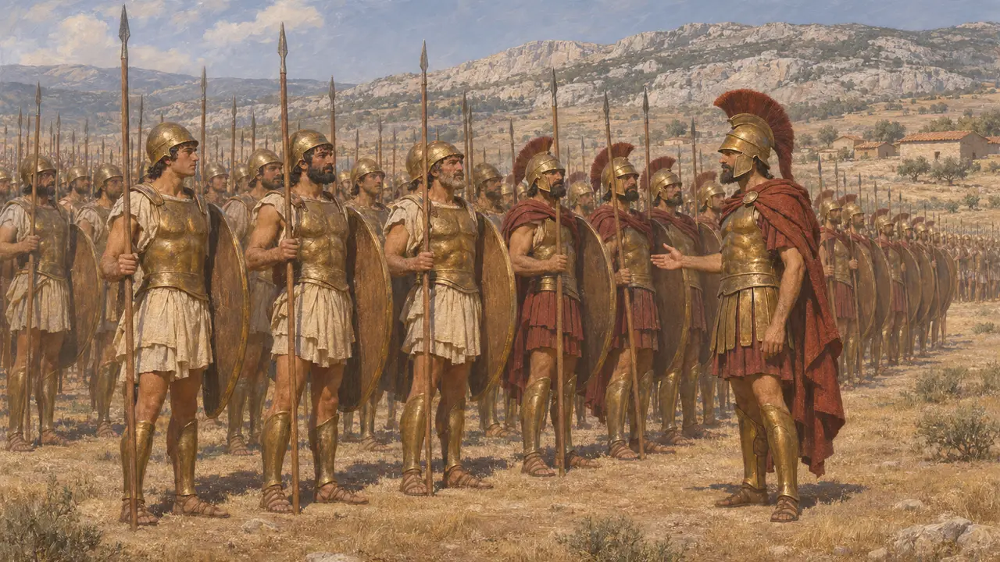
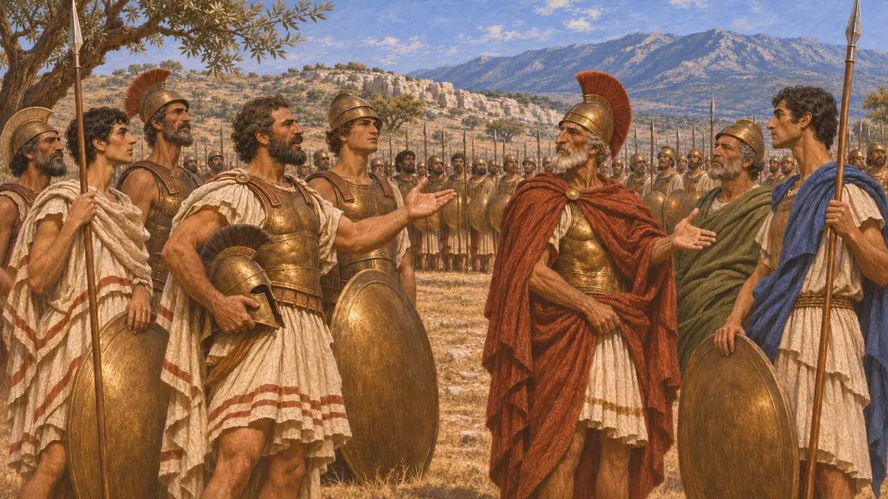
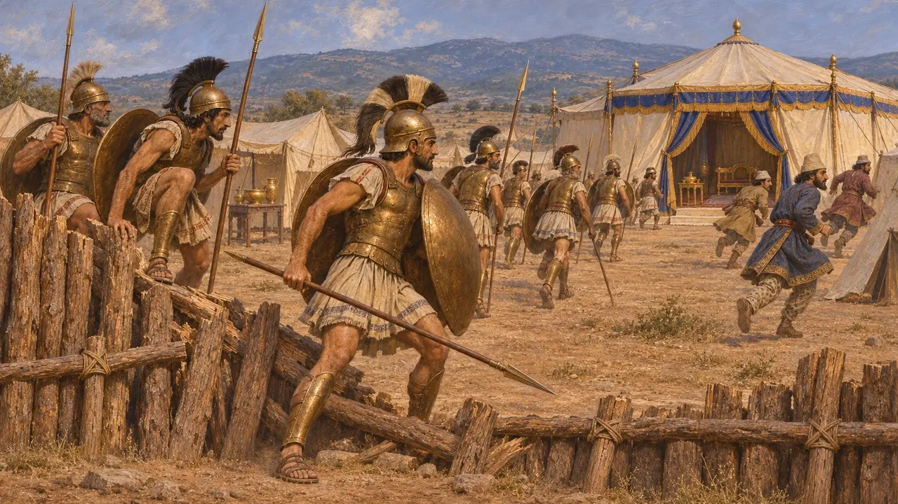
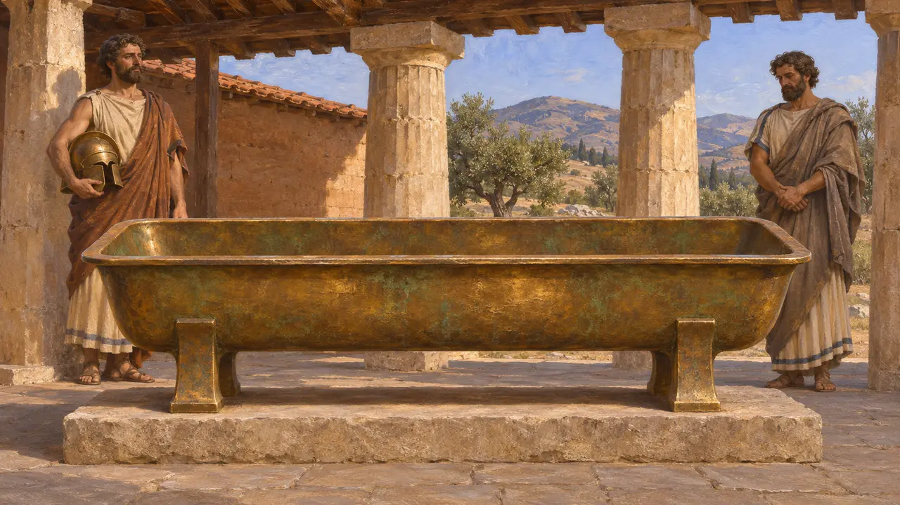
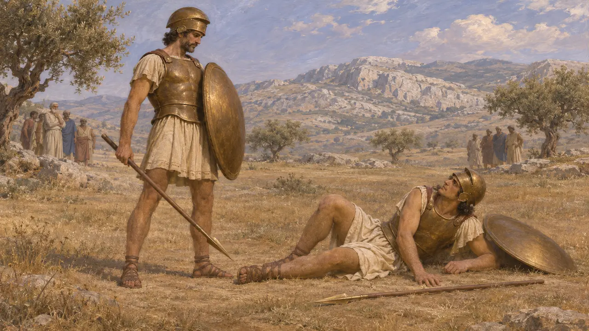

Tegealılar
Tegealı Arkadyalı Yunanlar, Thermopylai ve Plataiai'de Sparta'nın müttefikleri, MÖ 480-479
Oyunda: Bölüm 11: Final
Tegealılar, orta Peloponnesos'ta Arkadya'nın bir kenti olan Tegea'nın halkıydı. Uzun süre Sparta'nın rakibi olan Tegea, Sparta önderliğine girdi ve hoplitleri Plataiai'deki Yunan hattında Spartalıların yanında durdu. Herodotos Mardonios'un ordugâhına ilk girişi ve tunç yemliğinin yağmalanmasını onlara verir.
Oyunda: Oyun Tegealıları Vakayinamede, fermanlarda ve savaş alanı brifinglerinde, Pausanias komutasında Plataiai'deki Yunanlar ve Mardonios'un kalesine ilk girenler olarak anar. Bu metinlerin gösterdiğinin ötesinde kendilerine ait bir mekanikleri yoktur.

Arkadya'nın bir kenti
Antik anlatıTegea, Sparta'nın kuzeyinde Arkadya'daydı. Herodotos'a göre Spartalılar Tegealılarla uzun süre başarısızca savaştılar, ta ki Orestes'in kemiklerini geri alana dek; ondan sonra Tegea'yı savaşta yendiler. Tegea bundan sonra Peloponnesos kuvvetlerinde Sparta'nın müttefiki oldu.
Herodotus 1.65-68

Thermopylai ve Plataiai'deki toplanma
Antik anlatıHerodotos MÖ 480'de Thermopylai'yi tutan Yunanlar arasında 500 Tegealı sayar. MÖ 479'daki Plataiai için onlara Spartalıların yanında konuşlanmış 1.500 hoplit verir. Leonidas'ın küçük oğlu Pleistarkhos adına naiplik eden Pausanias bütün orduya komuta ediyordu.
Herodotus 7.202; 9.10; 9.28

Onur yeri
Antik anlatıHerodotos'a göre Tegealılar ile Atinalılar savaştan önce Spartalıların yerinin karşısındaki öbür kanadı kimin tutacağı üzerine tartıştı. Her iki taraf geçmiş işlerini andı ve Spartalılar soldaki kanat için Atinalılardan yana karar verip Tegealıları kendi yanlarında bıraktı. Konuşmalar büyük olasılıkla Herodotos'un kendi kaleminden çıkmadır ve iki kentin sonraki gururunu yansıtır; bu yüzden sözcükleri güvenilir değildir.
Herodotus 9.26-28

Savaş ve ordugâh
Antik anlatıHerodotos'a göre Spartalılar ve Tegealılar kalkan siperinde Perslerin asıl saldırısını göğüsledi. Kurbanlar uğursuz çıkıp Pausanias geri durunca önce Tegealılar ilerledi, Spartalılar da ardından geldi. Spartalı Arimnestos Mardonios'u öldürünce Persler bozulup ahşap surlu ordugâhlarına kaçtı. Herodotos surdan ilk geçenlerin Tegealılar olduğunu ve Mardonios'un çadırını yağmaladıklarını söyler.
Herodotus 9.61-65; 9.70

Tunç yemlik
Antik anlatıHerodotos'a göre Tegealılar Mardonios'un konağından tunç bir yemlik aldılar ve onu Tegea'daki Athena Alea tapınağına adadılar. Onu görülmeye değer bir parça olarak tarif eder. Günümüze ulaşıp ulaşmadığı bilinmez ve kazılarda ondan bir iz saptanmamıştır.
Herodotus 9.70

Çekişmenin köken mitleri
Geç dönem efsanesiSavaş öncesi tartışmada Herodotos, Tegealılara kralları Ekhemos'un Herakles'in oğlu Hyllos'u öldürdüğü bir teke tek dövüşü hatırlatır. Bu, Yunan kahramanlık geçmişine aittir. 5. yüzyılda bir onur iddiası olarak kullanılmıştır ve Pers savaşlarındaki olayların kanıtı değildir.
Herodotus 9.26
Kaynaklar
- Herodotus 9.26-28, 9.61-70
- Herodotus 7.202
- Herodotus 1.65-68